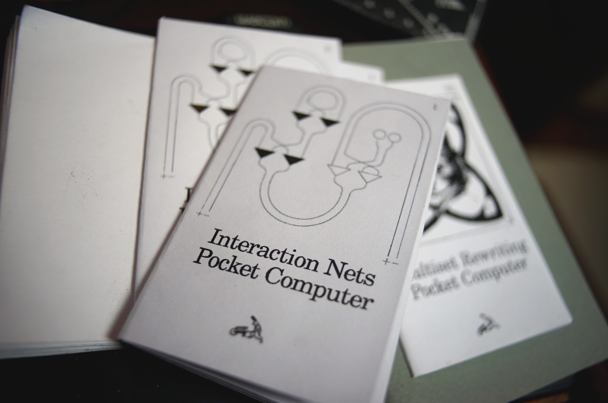
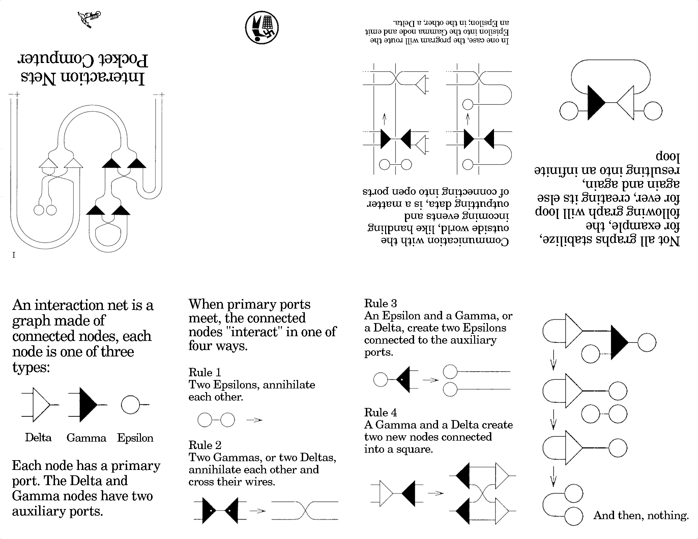
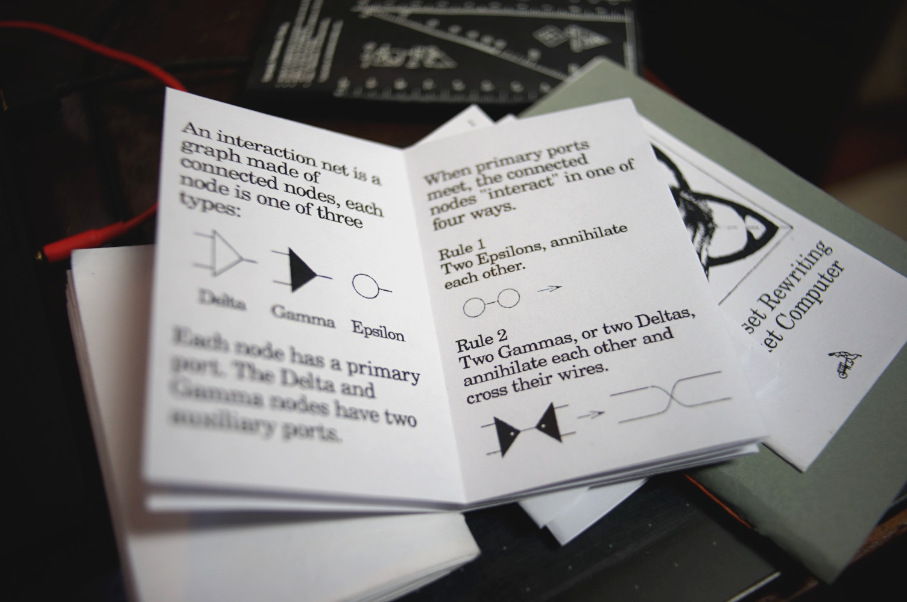

A zine on interaction nets.
A eight-pager that introduces the concept of symmetric interaction combinators with a few examples. If you'd like to learn more and see interaction nets in motion, watch this video. The back cover is purposely left blank to allow for note-taking.

Print on A4, without margin, or find the 4 tiny black printed dots at the edge of the page, and remove excess margin with scissors.

incoming: interaction nets 2026